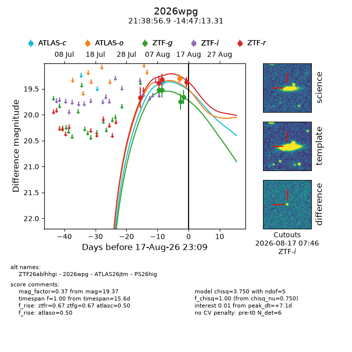
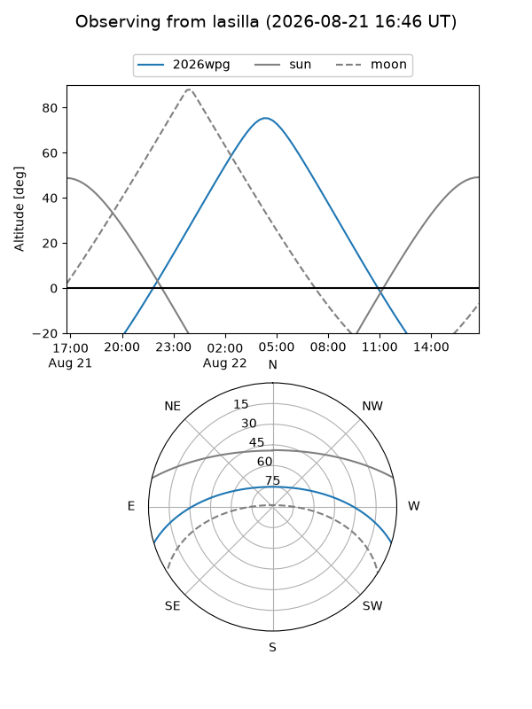
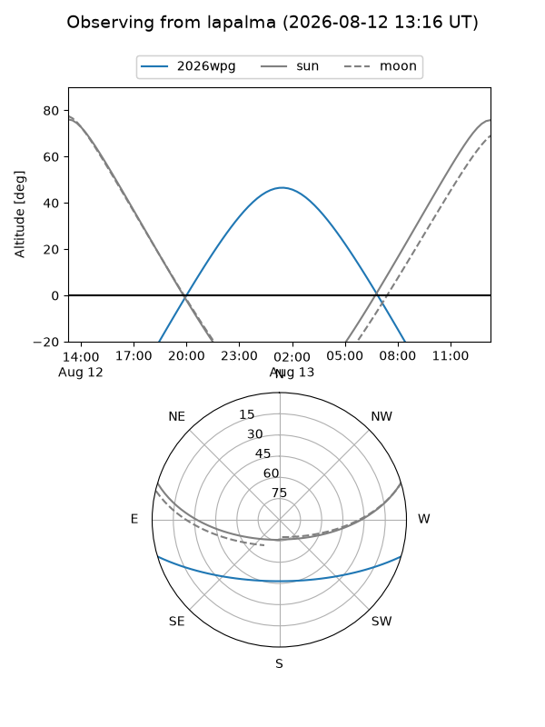
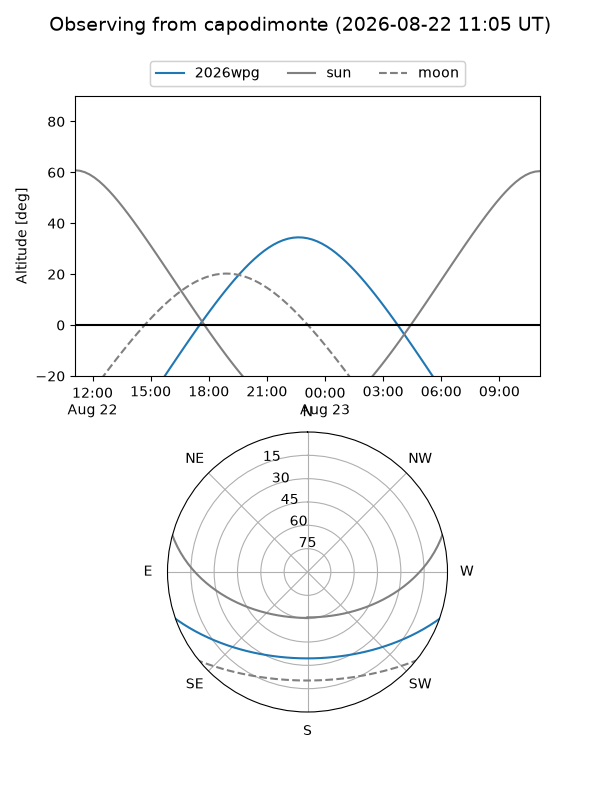
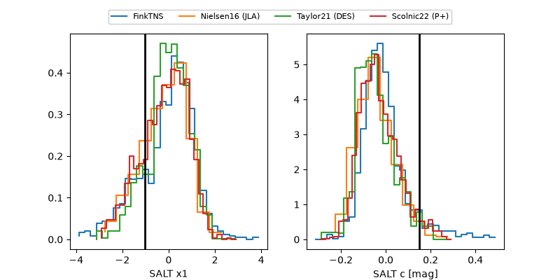

2026wpg
Target 2026wpg at 2026-08-17 23:12
Aliases and brokers:
FINK-ZTF: ztf.fink-portal.org/ZTF26ablhhgi
Lasair-ZTF: lasair-ztf.lsst.ac.uk/objects/ZTF26ablhhgi
ALeRCE-ZTF: alerce.online/object/ZTF26ablhhgi
YSE-PZ: ziggy.ucolick.org/yse/transient_detail/2026wpg
TNS name: wis-tns.org/object/2026wpg
Direct TNS query: direct search
alt names
ZTF26ablhhgi (ztf,fink_ztf)
2026wpg (tns,yse)
ATLAS26jtm (atlas)
PS26hig (panstarrs)
Coordinates:
equatorial (ra, dec) = 324.7373,-14.78703
equatorial (HMS+DMS) = 21:38:56.95,-14:47:13.31
galactic (l, b) = (38.2615,-43.69423)
Flags:
TNS type: nan
peak dt: +7.1
Photometry:
last atlasc=19.36, atlaso=19.30, ztfg=19.66, ztfr=19.37
1 atlasc, 1 atlaso, 4 ztfg, 4 ztfr detections
Lightcurve

Visibility



Additional plots
